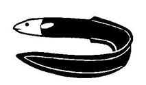
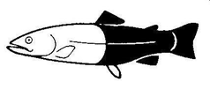
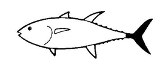
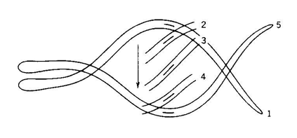
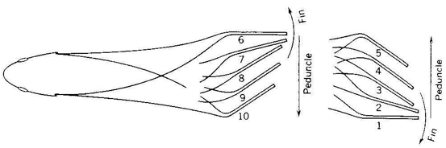
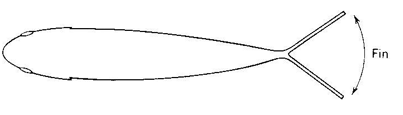
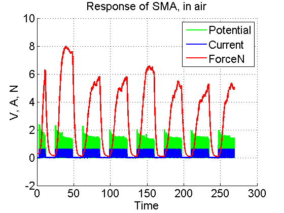
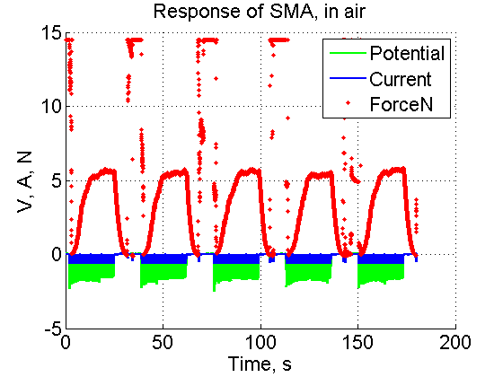
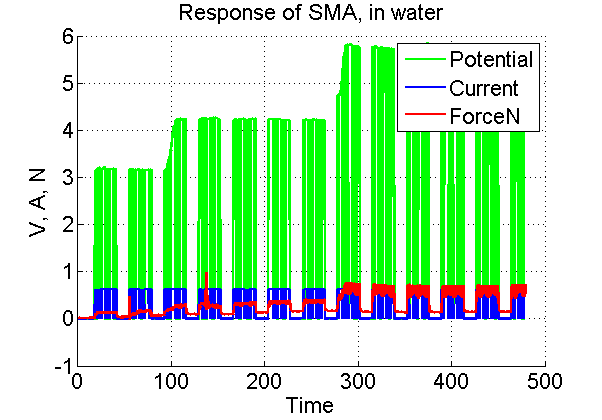
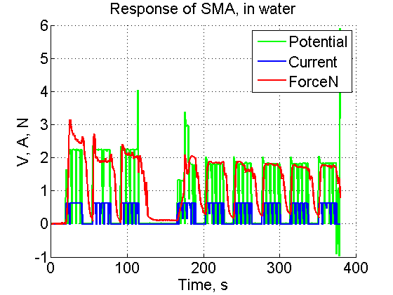

Fish swim by shedding vortices and generating low-pressure pockets of water which propell them forward. This can be achieved in a variety of permutations by different body shapes and overall body motions.
| Anguilliform | Carangiform | Thunniform |
|  |  |  |
|  |  |  |
(Merck Jr. 2007)
Differences in fish motion between species and body types can be most simply classified by the amount of the fish that is involved in swimming motion. Fish can swim using their tails, a limited part of their bodies, most of their bodies, or anything in between.
Initially, we investigated fish actuation using a non-traditional actuator.
Shape-memory alloy (SMA), is metal which returns to a particular shape when heated. In our initial plans, we used Flexinol (a nickel-titanium alloy) wire which contracts upon heating. SMA has historically been difficult to use as an actuator due to the amount of time required for the alloy to cool and return to an unactuated state. We hoped to overcome this by using water to rapidly cool the SMA.
We began to characterize our SMA on a rig designed to maintain tension in air or water.
|  |  |
|  |  |
Overall, we found that the amount of current required to sufficiently heat the SMA underwater was unworkable, as was the amount of time required to cool the SMA in air.
As demonstrated in the videos above, while we were able to design and manufacture a joint which generated a contraction using SMA, we were unable to ultimately create productive motion when we attempted to move the system into water.
Accordingly, the final systems involved actuation using servo motion to better capture the fish motions researched.
| Item Bought | Price |
|---|---|
| 10" Flexinol .012" | $16.51 |
| 5000Ah LiPo | $24.02 |
| Crimps x 100 | $4.25 |
| Acrylic (12*24) x 2 | $31.52 |
| Delrin (12*24) | $27.26 |
| Total Spent | $103.56 |
| Item Scavenged | Estimated Price |
|---|---|
| Arduino Uno | $22 |
| Hobby King Servos x 3 | $10.08 |
| Pink Foam | $12 |
| XBee x 2 | $34 |
| UartSBee V3.1 x 2 | $34 |
| Metal Scrap | $15 |
| IR Sensors x 3 | $44.85 |
| Wire, tape, misc | $2 |
| Total | $170 |
| Total Value Used | $273.49 |
|---|
Merck Jr., John. “The biomechanics of swimming.” The University of Maryland, College Park. Pub: 9-21-07 Access: 12-12-14. http://www.geol.umd.edu/~jmerck/bsci392/lecture10/lecture10.html.